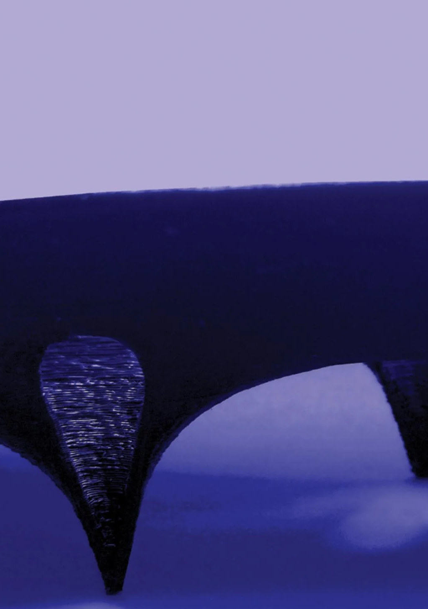

Computational
Design
Portfolio
Riyadh · Barcelona · Tamil Nadu

Computational designer & researcher in robotic fabrication and geometry.
I build the geometry, perception and motion systems that let machines fabricate with material that does not come in standard sizes: irregular timber, salvaged stone, sheet metal, clay and concrete. The work spans graduate research, built pavilions and open-source tools for AEC.
Trained in architecture (B.Arch, SPA Vijayawada, 2019) and robotics & advanced construction (MRAC, IAAC Barcelona, 2021-23); since 2025 a Research Assistant at Alfaisal University, Riyadh, in digital fabrication and robotic manipulation, also teaching workshops and an elective course.
{{ p.title }}
{{ p.blurb }}
{{ p.title }}
{{ p.lead }}
{{ p.body }}
{{ p.title }}
Thank you.
A decade of work in one place, from the 2016 - 2023 academic and robotic-fabrication projects to the 2023 - 2026 research, software, sensing, stone and heritage work. Thank you to the studio teams, co-authors, crews and colleagues named in these pages.
github.com/libishm1
Computational Architecture & Robotics
Riyadh · 2026
© 2026 Libish Murugesan · All rights reserved · Not for reproduction or AI training